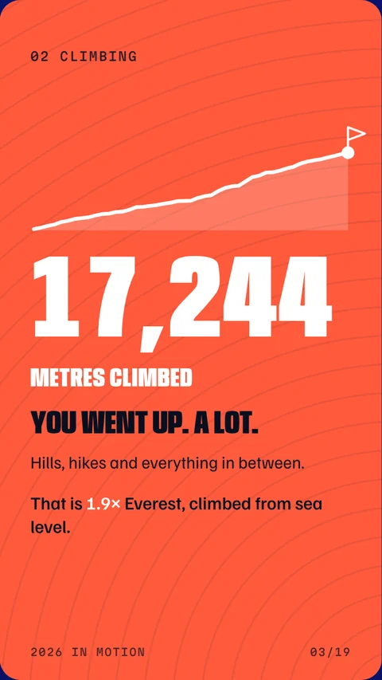
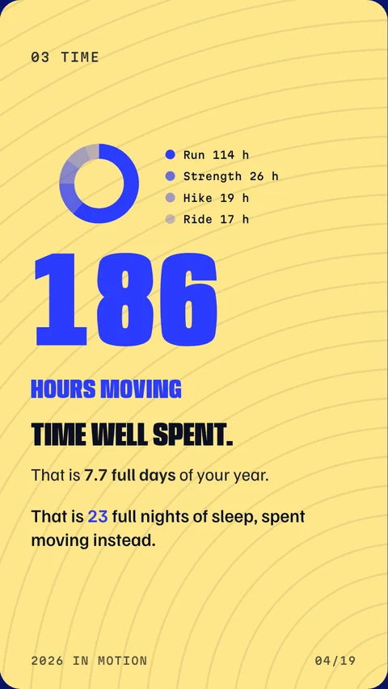
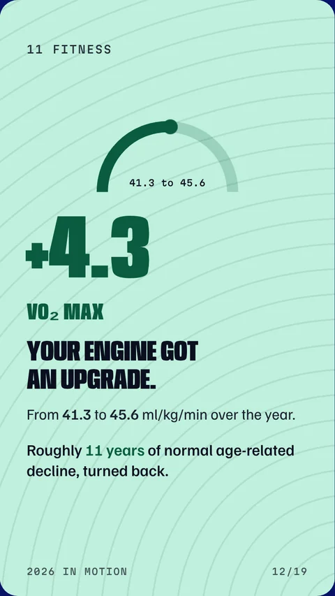

Bring your Strava data, your wearable data, or both. Get swipeable story cards you can post. About two minutes.
recaps made so far
Mix and match. Use Strava for workouts and a wearable for sleep and heart rate. Free, no sign up, nothing uploaded.
Using Strava? Ask for your file first. It arrives by email, which can take a while.



Three steps. The slow part is waiting for your export email.
Ask Strava, Apple Health or your watch brand (Garmin, Whoop, Polar and more) for your data. It is a free download. Steps are below.
Open the app, press "Use my data" and drop everything in one box. It works out what each file is.
Swipe through, pick a look, then save the cards as images. Share them to Instagram from your phone.
Pick the apps you use. Strava, wearables, or both. You only need one, and every extra source adds more cards.
Everything is read inside your own browser tab. Your files are not uploaded to a server, and there is no account.
There are no cookies and no tracking. The only thing we count is how many recaps get made: a plain +1, with nothing about you or your files. When you close the tab, your data is gone.